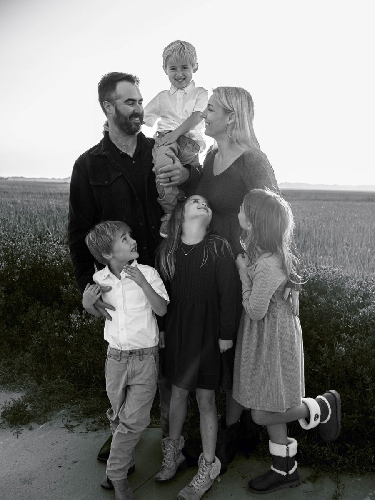

Check your email and texts to confirm your appointment.
[One or two lines introducing what this video covers. Josh opens with a hook question here.]
Meet our team
[One or two lines about the team, e.g. how they work with men and women in every kind of marriage crisis]
When Bill came to us, his wife had moved out and divorce felt inevitable. Instead of trying to convince her or control the outcome, he learned how to become more steady, grounded, and emotionally clear. That shift changed the dynamic and created space for real repair.
After her husband said he wanted a divorce, Samantha felt like she had run out of options. Instead of chasing reassurance or trying to fix him, she began confronting the patterns that shaped how she showed up under pressure, and became steady in a way that shifted the tone of the relationship.
These stories are shared by individual clients and reflect their own experience. They are not typical results and are not a promise of any specific outcome for your marriage.

About
I know what it's like to be the one still fighting. Chris and I went from a summer romance to four babies in about five years, and somewhere along the way we became roommates. The week after my sister died, he told me he wanted a divorce.
I stopped chasing and started with me. I came back to the grounded, warm woman I'd lost, and it changed the entire dynamic of our marriage. That became the True Self Method, and it's what my team and I now teach men and women in every kind of marriage crisis.
On your call, we'll look at your situation together. It only takes one. And that one is you.
Sophie
Before your call
Yes. Most people who book are the only one working on the marriage right now. Our work is with you, and your spouse doesn't need to take part.
That's one of the most common things we hear on these calls. We'll look at where things really stand and be honest with you about what we see.
Counseling usually works on communication, and it needs both people in the room. We work on the layer underneath that: who you're being and what your spouse feels from you. You can do that on your own.
A member of Sophie's team will ask about your situation, help you see the cycle your marriage is in, and map out your next steps. If our program is a fit, we'll explain how it works. If it isn't, we'll tell you.
[Answer. Pull from Sophie's current confirmation page FAQ.]
While you wait
Hear Sophie and Chris tell the full story of how their marriage came back, and the episodes we share most with people in your situation.
Listen on Spotify →